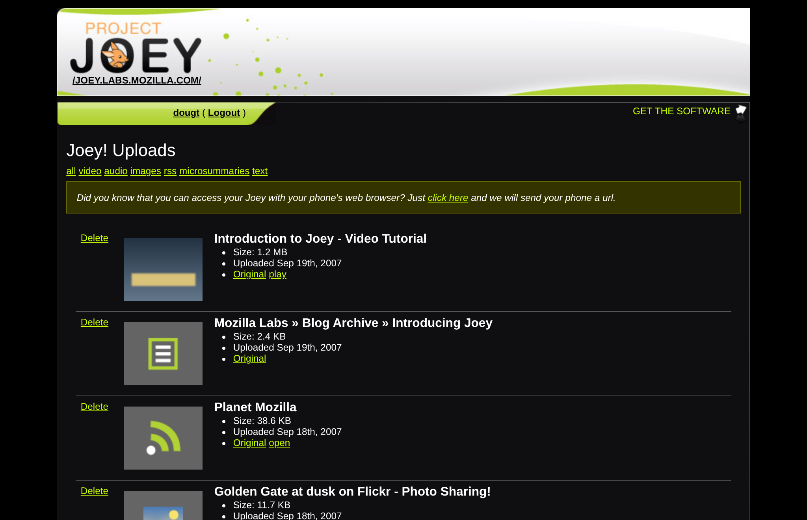

Mozilla Labs · 2007 · a project from pre-iPhone days
Send the Web to your phone.
Project Joey was a three-part experiment: a Firefox extension that let you right-click anything on a page and send it to a server, a server that reshaped that content for a tiny screen, and a phone app (or just the phone's browser) that fetched it. It shipped in May 2007, six weeks before the first iPhone.
Firefox 2 add-on CakePHP + MySQL server Python transcoding daemon Java ME phone app iPhone and WAP views

What it was for
In 2007 a phone's view of the Web was whatever its carrier put on the "deck", plus whatever a cramped WAP browser could render. Joey's premise, in Doug Turner's words to RCR Wireless at launch, was to "put the user back in control": you would build your own mobile deck out of the pieces of the desktop Web you actually cared about. The login page said it plainly: "Project Joey brings the Web content you need most to your mobile phone."
The trick was that the pieces could be more than bookmarks. You could clip a paragraph, an image, an MP3 or a Flash video and the server would transcode it into something a 2007 handset could play. You could send an RSS feed and the server would keep re-fetching it into a phone-sized digest. And you could point at a region of a page, a scoreboard or a stock ticker, and the server would re-scrape just that region every time you looked at it from the phone. That last feature reused Firefox 2's microsummary machinery, an XPath plus an XSLT template, and it is the part of Joey that still feels ahead of its time.
Selected text
Highlight anything, right-click, "Joey! Selected Text". Saved as text/plain with the page title and URL.
Images
Right-click an image and choose "Joey! Selected Image". The server resizes it to 100×100 and makes a 50×50 preview for the phone's list view.
Audio and video
The add-on sniffed every HTTP response for FLV, MOV, WMV, AVI, MPEG, MP3 and WAV. One click on "Joey! Media on page" fetched the media and uploaded it; ffmpeg turned it into 3GP video or AMR audio.
RSS feeds
Send a site's feed and the daemon re-fetches it into an HTML digest. Sites you visited ten times got their feed sent automatically, if you opted in.
Live page regions
A page-area picker highlights elements as you hover; click one ("Joey! Summary Capture") and Joey uploads a microsummary generator for it. The server re-scrapes that XPath so the phone always sees the current value.
Your open tabs
An optional timer uploaded a list of every open window and tab every five minutes, so your phone could pick up where your desktop left off.
How it worked
- Clip in Firefox. The add-on added two context-menu items and a status-bar menu. Whatever you chose was handed to an XPCOM component that logged in (using Firefox's password manager) and POSTed a multipart form to
/uploads/addon the Joey server. - Store and queue on the server. A CakePHP 1.1 application validated the upload, checked a 20 MB per-user quota, wrote the original file to disk and inserted
uploads,filesand, for feeds and summaries,contentsourcesrows. It then pingedjoeyd, a Python daemon listening on localhost, with the new upload's id. - Transcode or refresh in joeyd. A thread pool processed each id: ImageMagick for pictures, ffmpeg for audio and video, feedparser for RSS, lxml's XSLT for microsummaries. Results went back next to the originals, with a PNG preview, and the row was marked
ever_updated. - Pick up on the phone. The Java ME MIDlet polled
/uploads/index?since=…&rest=1every five minutes and parsed a plain key=value response with base64 previews. Phones without the app got a WAP page, and an iPhone got an iUI-styled list in Safari. - Send something back. The MIDlet could take a camera snapshot and upload it through the same endpoint, so the server was a two-way shoebox, not just a push channel.

The three pieces
The Firefox add-on
About 3,000 lines of XUL and JavaScript: a browser overlay, a status-bar upload manager, a page-area picker, a media sniffer, a feed watcher and the mocoJoey XPCOM component that talks to the server. Shipped as joey.xpi version 0.3.0.0 for Firefox 0.8 through 3.0, with English and Brazilian Portuguese locales.
The server
A CakePHP 1.1 app (users, uploads, files, version and admin controllers) with five layouts chosen by user-agent sniffing, plus joeyd.py, a 1,300-line Python daemon that does the transcoding and feed refreshing, and small scripts for cron, load testing and importing the phone build list.
The phone clients
A Java ME MIDlet built with J2ME Polish (per-device JARs for Nokia, Motorola, HTC and generic MIDP 2 handsets, English and German), an iPhone web view built on Joe Hewitt's iUI, and a plain XHTML Mobile Profile view for everything else.
Why it mattered, and why it stopped
Joey was Mozilla's first serious attempt at the question "what is the browser's job on a phone?" before Mozilla had a phone browser worth using. Minimo, the earlier embedded Gecko port, was shut down in November 2007; Fennec, which became Firefox for Android, was only being started. Joey sidestepped the hard problem of rendering the real Web on a 240×320 screen by moving the work to the desktop and the server, which is also why it could reach ordinary feature phones through nothing but a JAR file and an SMS with a download link.
Two things overtook it within a year. The iPhone shipped on June 29, 2007 with a browser good enough that "send the Web to your phone" stopped being a problem worth a server, and the App Store followed in 2008. Meanwhile Mozilla's mobile energy moved to Fennec. The Mozilla Labs wiki states there were "no plans to productize Joey"; InfoWorld later summarised it as having "fizzled after about a year". The last change to this tree is dated December 2007, and the README added in 2014 says only: "A project from pre-iphone days."
What survived. The ideas did. Sending open tabs to another device became Firefox Sync's tab sync and later "Send Tab". Clip-to-read-later became Pocket, which Mozilla bought in 2017. Server-side transcoding for weak clients is what every video platform does. And "watch this region of a page and tell me when it changes" is still a product category on its own.
Who built it
Joey came out of Mozilla Labs under Doug Turner, then Mozilla's lead engineer for mobile, who wrote the extension, the XPCOM component and much of the server and daemon. Marcio Galli designed the green web theme, the welcome page and guided tour, the status-bar upload manager and the Portuguese locale. Michael Koch of Enough Software, the company behind J2ME Polish, wrote the Java ME client. Wil Clouser from Mozilla's web team worked on the CakePHP side and analytics. The page layouts carry the header of the addons.mozilla.org codebase they were borrowed from. See the history page for the timeline and sources.
About this site
Everything here was written by reading the source tree in this repository: 472 files across addons/ff, server and clients/j2me, plus the 55 commits imported from Mozilla's Subversion. The original service at joey.labs.mozilla.com is long gone and no screenshots were preserved with the code, so the images on this site were regenerated: the web pages were rebuilt from the original CakePHP templates, CSS and image assets and rendered in a modern browser; the Firefox and phone screens are CSS mock-ups built from the XUL, the string bundles and the J2ME Polish theme. The screenshots page explains exactly how, and the sources for each page are in www/recreations/.